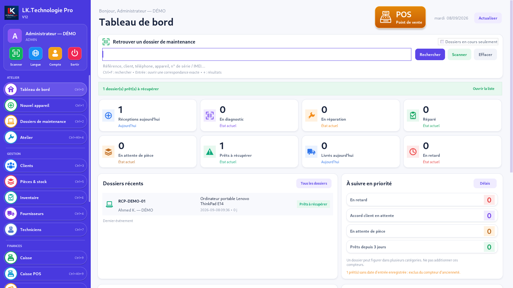
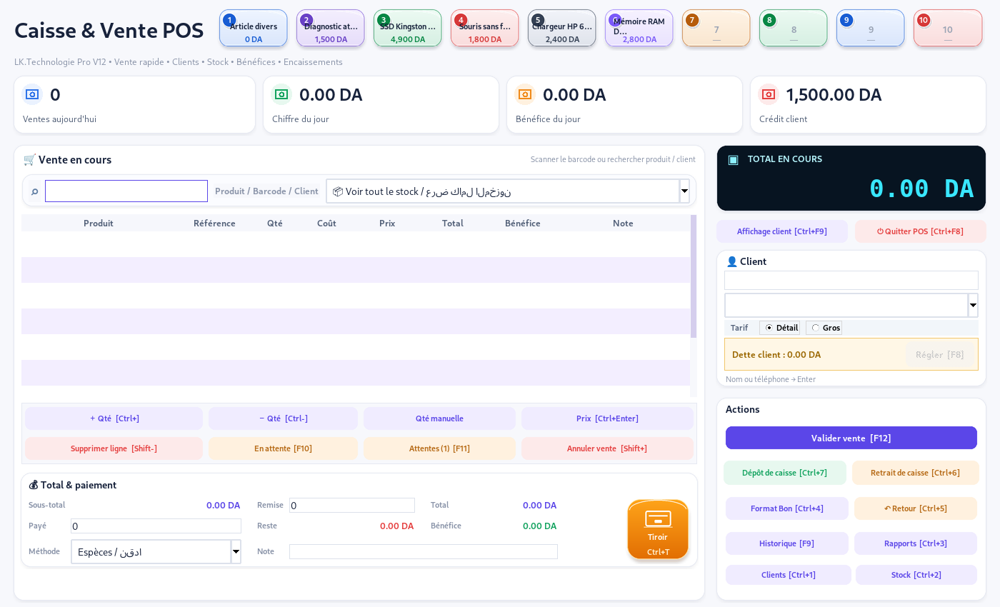
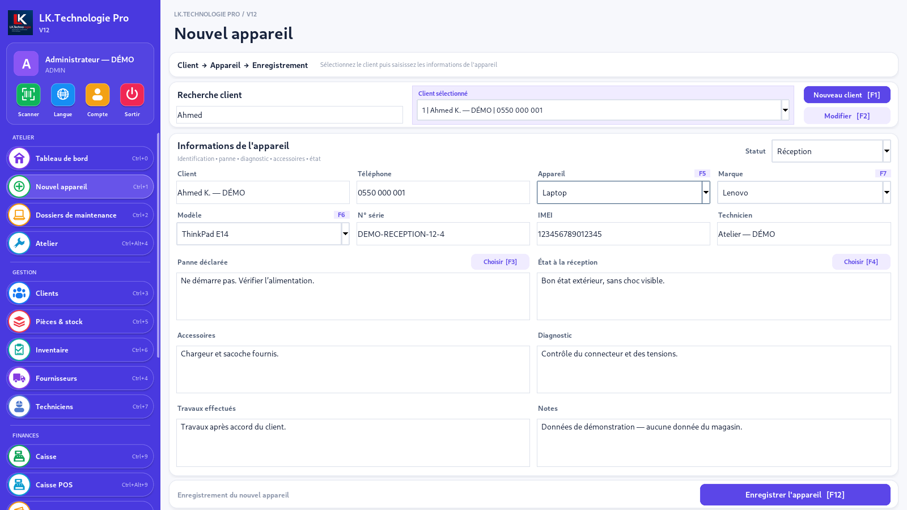
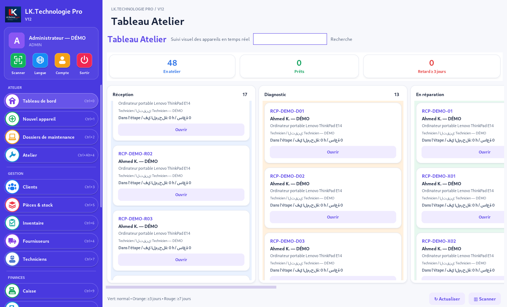
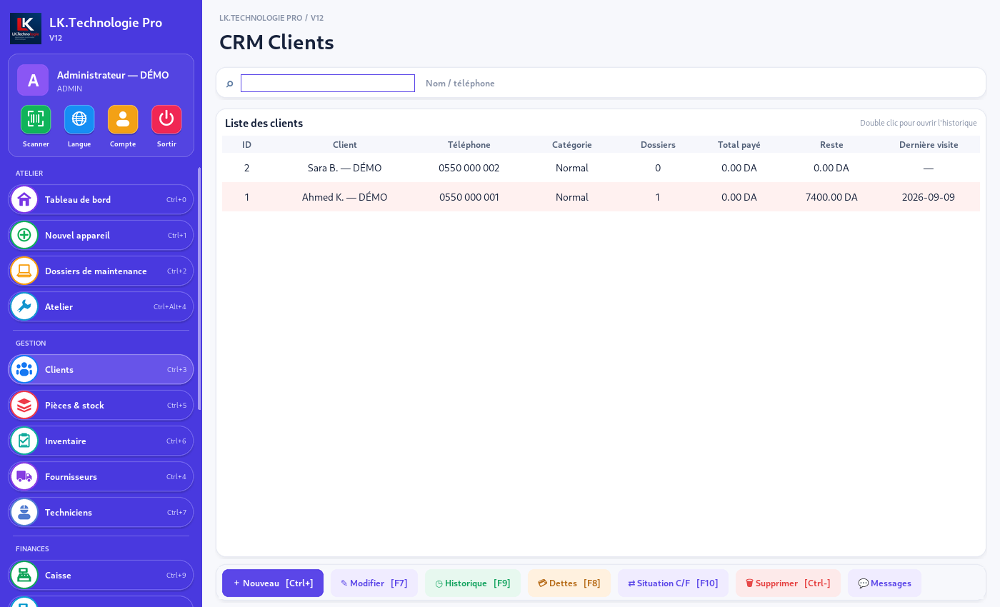
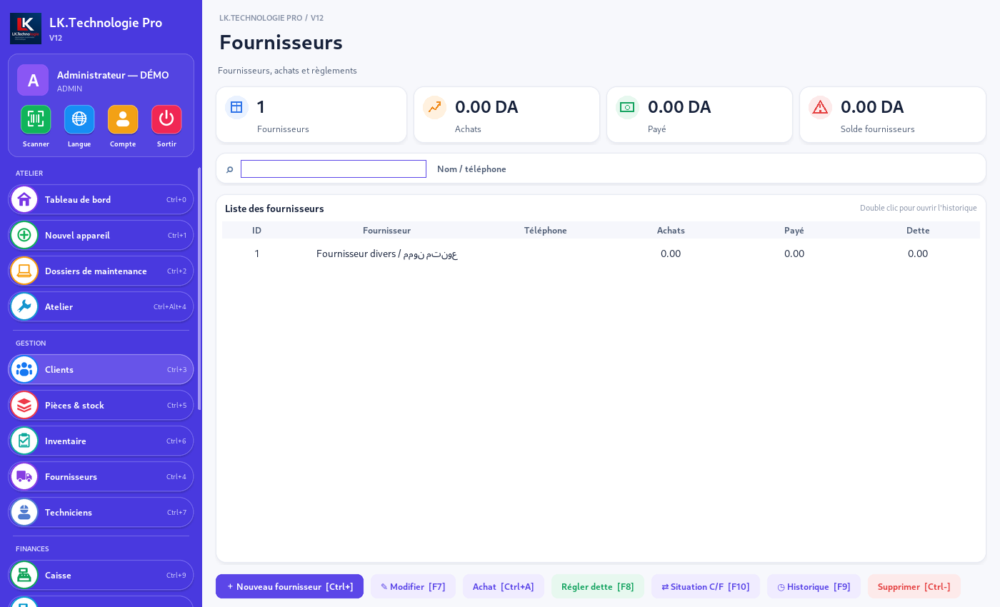
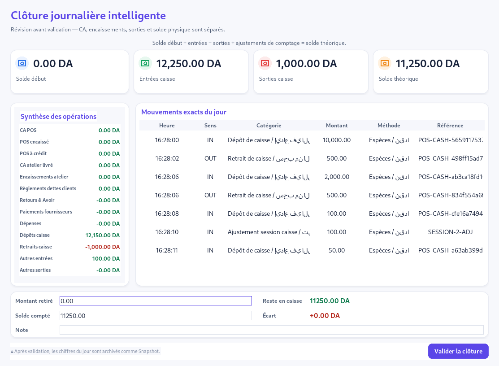
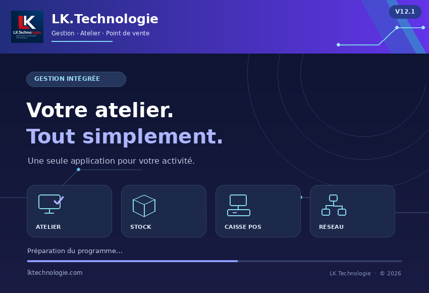

🛒
Point de vente
Ventes, code-barres, détail et gros, paiements et suivi de caisse.
Vente, stock, achats, fournisseurs, clients, atelier de réparation, caisse, finance et rapports — dans une interface professionnelle pensée pour l'activité informatique.

Les principaux outils nécessaires pour piloter quotidiennement votre activité.
Ventes, code-barres, détail et gros, paiements et suivi de caisse.
Suivi des appareils depuis la réception jusqu'à la livraison.
Produits, inventaire, achats, fournisseurs, retours et mouvements.
Soldes, dettes, règlements, historiques et situations détaillées.
Encaissements, dépenses, financement et clôtures journalières.
Une vision claire des ventes, de l'atelier, du stock et des finances.
Présentation réalisée uniquement à partir d'écrans réels du logiciel.
8 leçons pour découvrir l’interface et suivre le parcours de réparation, de la réception à la livraison. Voix arabe, sous-titres français.
Guide d’utilisation #01
Découvrez le démarrage et la navigation dans la nouvelle interface.
Télécharger la vidéo ↓Guide d’utilisation #02
Créez et retrouvez les fiches de vos clients.
Télécharger la vidéo ↓Guide d’utilisation #03
Enregistrez un appareil et les informations nécessaires à sa prise en charge.
Télécharger la vidéo ↓Guide d’utilisation #04
Renseignez le diagnostic dans le suivi de maintenance.
Télécharger la vidéo ↓Guide d’utilisation #05
Suivez les travaux effectués et l’avancement de la réparation.
Télécharger la vidéo ↓Guide d’utilisation #06
Préparez la remise de l’appareil et vérifiez le règlement.
Télécharger la vidéo ↓Guide d’utilisation #07
Finalisez la remise de l’appareil au client.
Télécharger la vidéo ↓Guide d’utilisation #08
Retrouvez et consultez vos dossiers de maintenance.
Télécharger la vidéo ↓






Téléchargez le logiciel, installez-le sur votre PC puis contactez LK.Technologie pour l'achat et l'activation.
Téléchargez la version Windows disponible ci-dessous.
Lancez le Setup et suivez l'assistant d'installation Windows.
Contactez LK.Technologie pour acheter votre licence et finaliser l'activation.
Les réponses essentielles avant le téléchargement et l'activation.
LK.Technologie Pro V12.1 est destiné à Windows 10 et Windows 11.
Oui. Après installation, une activation est nécessaire pour utiliser la version officielle.
Oui. Le bouton Télécharger V12.1 lance directement le téléchargement du Setup officiel.
Ventes, stock, achats, atelier, clients, fournisseurs, caisse, finance, rapports et impressions.
Contactez LK.Technologie sur WhatsApp pour connaître le tarif et obtenir votre licence.
Une assistance peut être demandée directement auprès de LK.Technologie.
Téléchargez la version officielle V12.1 pour Windows 10 et Windows 11.
{kind=link}
{kind=link}
{kind=link}
{kind=link}
{kind=link}
{kind=link}
{kind=link}
{kind=link}